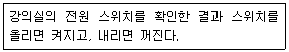
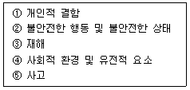
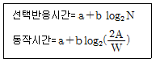
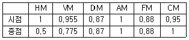
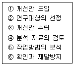
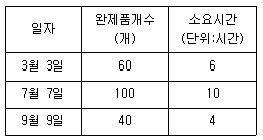

인간공학기사 (2010-07-25 기출문제)
1과목: 인간공학개론
1. 다음 중 정보가 시각적 표시장치보다 청각적 표시장치로 전달될 경우 더 효과적인 것은?
- 정보가 즉각적인 행동을 요구하는 경우
- 정보가 복잡하고 추상적일 때
- 정보가 후에 재창조되는 경우
- 직무상 수신자가 한 곳에 머무르는 경우
(정답률: 95%)

2. 연구의 기준척도에서 인간기준을 측정하는 퍼포먼스척도(performance measure)에 해당하지 않는 것은?
- 빈도척도
- 강도척도
- 종말척도
- 지속성척도
(정답률: 77%)
3. 다음 중 작업기억에 저장될 수 있는 최대 항목수로 가장 적절한 것은?
- 5±3
- 6±3
- 7±2
- 8±2
(정답률: 76%)
4. 다음 중 신호검출이론에 관한 설명으로 틀린 것은?
- 신호검출이론은 잡음이 신호검출에 미치는 영향을 다루는 것이다.
- 일반적으로 신호의 판정의 결과는 4가지이다.
- 제시된 자극 수준이 판정기준 이상이면 신호가 없다고 말한다.
- 신호검출의 난이도는 두 분포가 중첩된 정도로 나타낸다.
(정답률: 70%)
5. 음량수준(phon)이 80인 수음의 sone치는 얼마인가?
- 4
- 8
- 16
- 32
(정답률: 67%)
6. 다음 중 시식별에 영향을 주는 요소로서 관련이 가장 적은 것은?
- 시력
- 표적의 형태
- 밝기
- 물체 크기
(정답률: 72%)
7. 음의 한 성분이 다른 성분에 대한 귀의 감수성을 감소시키는 상황을 무슨 효과라 하는가?
- 은폐(masking)
- 밀폐(sealing)
- 기피(avoid)
- 방해(interrupt)
(정답률: 90%)
8. 인체측정자료의 응용원리 중 측정자료의 5%tile이나 95%tile 값을 적용하기 어려운 경우 가장 적절한 응용원리는?
- 평균치를 이용한 설계 원리
- 최대치를 이용한 설계 원리
- 최소치를 이용한 설계 원리
- 주문자 방식의 설계 원리
(정답률: 85%)
9. 피부의 감각기 중 감수성이 제일 높은 감각기는?
- 온각
- 압각
- 통각
- 냉각
(정답률: 80%)
10. 다음 중 움직이는 몸의 자세로부터 측정한 인체치수를 무엇이라고 하는가?
- 기능적 인체치수
- 구조적 인체치수
- 파악한계 치수
- 조절 치수
(정답률: 93%)
11. 다음 중 정보에 관한 설명으로 옳은 것은?
- 정보이론에서 정보란 불확실성의 감소라 정의할 수 있다.
- 선택반응시간은 선택대안의 개수에 선형으로 반비례한다.
- 대안의 수가 늘어나면 정보량은 감소한다.
- 실현 가능성이 동일한 대안이 2가지일 경우 정보량은 2bit이다.
(정답률: 60%)
12. 다음 내용에 해당하는 양립성의 종류는?

- 운동 양립성
- 개념 양립성
- 공간 양립성
- 양식 양립성
(정답률: 70%)
13. 다음 중 기계가 인간보다 더 우수한 기능이 아닌 것은?
- 이상하거나 예기치 못한 사건들을 감지한다.
- 자극에 대하여 연역적으로 추리한다.
- 장시간에 걸쳐 신뢰성 있는 작업을 수행한다.
- 암호화된 정보를 신속하고, 정확하게 회수한다.
(정답률: 77%)
14. 인간-기계 인터페이스를 설계할 때 편리성, 신뢰성 그리고 기능 등을 고려하는 설계 요소 중 가장 우선하여 설계되어야 하는 특성 항목은?
- 기계 특성
- 사용자 특성
- 작업장 환경 특성
- 운용 환경 특성
(정답률: 88%)
15. 정상조명 하에서 5m 거리에서 볼 수 있는 원형 바늘 시계를 설계하고자 한다. 시계의 눈금 단위를 1분 간격으로 표시하고자 할 때 눈금간의 간격은 몇 ㎜ 정도로 하여야 하는가?
- 9.15
- 18.31
- 45.75
- 91.55
(정답률: 40%)
16. 다음 중 “인간공학”을 지칭하는 용어로 적절하지 않은 것은?
- Biology
- Ergonomics
- Human factors
- Human factors engineering
(정답률: 90%)
17. 다음 중 일반적으로 입식 작업에서 작업대 높이를정할 때 기준점이 되는 것은?
- 어깨 높이
- 팔꿈치 높이
- 배꼽 높이
- 허리 높이
(정답률: 82%)
18. 다음 중 눈의 구조에 관한 설명으로 옳은 것은?
- 망막은 카메라의 필름처럼 상이 맺혀지는 곳이다.
- 수정체는 눈에 들어오는 빛의 양을 조절한다.
- 동공은 홍채의 중심에 있는 분위로 시신경세표가 분포한다.
- 각막은 카메라의 렌즈와 같은 역할을 한다.
(정답률: 77%)
19. 일반적으로 표시장치의 연속 위치에는 또는 정량적으로 맞추는 조종 장치를 사용하는 경우에는 2가지 동작이 수반하는데 하나는 큰 이동 동작이고, 또 하나는 미세한 조정 동작이다. 최적의 C/R(control/response) 비를 결정하고자 할 때 이에 관한 설명으로 옳은 것은?
- C/R 비가 감소함에 따라 조정 시간은 급격히 감소하다가 안정된다.
- C/R 비가 감소함에 따라 이동 시간은 급격히 감소하다가 안정된다.
- C/R 비가 증가함에 따라 조정 시간은 급격히 증가하다가 안정된다.
- C/R 비가 증가함에 따라 이동 시간은 급격히 감소하다가 안정된다.
(정답률: 42%)
20. 다음 중 Fitts의 법칙과 관련이 없는 것은?
- 표적의 폭
- 이동소요 시간
- 이동의 궤도
- 표적 중심선까지의 이동거리
(정답률: 74%)
2과목: 작업생리학
21. 뇌파(EEG)의 종류 중 안정시에 나타나는 뇌파의 형은?
- α 파
- β 파
- δ 파
- γ 파
(정답률: 82%)
22. 다음 중 에너지소비율(Relative Metabolic Rate)에 관한 설명으로 옳은 것은?
- 작업시 소비된 에너지에서 안정시 소비된 에너지를 공제한 값이다.
- 작업시 소비된 에너지를 기초대사량으로 나눈 값이다.
- 작업시와 안정시 소비에너지의 차를 기초대사량으로 나눈 값이다.
- 작업강도가 높을수록 에너지소비율은 낮아진다.
(정답률: 83%)
23. 다음 중 사무실의 공기를 관리하고자 할 때 오염물질의 관리 기준이 잘못된 것은?
- 석면은 0.01개/cc 이하이어야 한다.
- 일산화탄소(CO)는 10ppm 이하이어야 한다.
- 이산화탄소(CO2)의 농도는 100ppm 이하이어야 한다.
- 포름알데히드의 농도가 0.1ppm 이하이어야 한다.
(정답률: 86%)
24. 다음 중 근력과 지구력에 관한 설명으로 틀린 것은?
- 근력에 영향을 미치는 대표적 개인적 인자로는 성(性)과 연령이 있다.
- 정적(static) 조건에서의 근력이란 자의적 노력에 의해 등척적으로(isometrically) 낼 수 있는 최대 힘이다.
- 동적(dynamic) 근력은 측정이 어려우며, 이는 가속과 관절 각도의 변화가 힘의 발휘와 측정에 영향을 주기 때문이다.
- 근육이 발휘할 수 있는 최대 근력의 50% 정도의 힘으로는 상당히 오래 유지할 수 있다.
(정답률: 83%)
25. 우리 몸의 구조에서 서로 유사한 형태 및 기능을 가진 세포들의 모임을 무엇이라 하는가?
- 기관계
- 조직
- 핵
- 기관
(정답률: 89%)
26. 작업장에서 8시간 동안 85dB(A)로 2시간, 90dB(A)로 3시간, 95dB(A)로 3시간 소음에 노출되었을 경우 소음노출지수는? (단, 국내의 관련 규정을 따른다.)
- 0.975
- 1.125
- 1.25
- 1.5
(정답률: 52%)
27. 어떤 작업의 평균 에너지값이 6kcal/min 이라고 할 때 60분간 총 작업시간 내에 포함되어야 하는 휴식시간은 약 몇 분인가? (단, Murrell의 방법을 적용하여, 기초대사를 포함한 작업에 대한 권장 평균 에너지값의 상한은 4kcal/min 이다.)
- 6.7
- 13.3
- 26.7
- 53.3
(정답률: 56%)
28. 다음 중 산소소비량에 관한 설명으로 틀린 것은?
- 산소소비량은 단위 시간당 호흡량을 측정한 것이다.
- 산소소비량과 심박수 사이에는 밀접한 관련이 있다.
- 심박수와 산소소비량 사이는 선형관계이나 개인에 따른 차이가 있다.
- 산소소비량은 에너지 소비와 직접적인 관련이 있다.
(정답률: 55%)
29. 다음 중 인체의 부분과 그 역할의 연결이 잘못된 것은?
- 간뇌 : 자극에 대한 자율적인 반응 및 체온조절
- 소뇌 : 몸의 자세와 균형 유지
- 중뇌 : 시간반사와 안구운동에 관한 반사중추
- 척수 : 타액분비중추
(정답률: 81%)
30. 신체동작의 유형 중 인체 분절(segment)의 운동 궤적이 원뿔을 형성하는 관절동작에 해당하는 것은?
- 회전(rotation)
- 회선(circumduction)
- 회외(supination)
- 회내(pronation)
(정답률: 50%)
31. 조도가 균일하고, 눈이 부시지 않지만 설치비용이 많이 소요되는 조명방식은?
- 직접조명
- 간접조명
- 복사조명
- 국소조명
(정답률: 80%)
32. 다음 중 소음에 대한 대책으로 적절하지 않은 것은?
- 소음원의 제어
- 내성이 강한 근로자의 선발
- 소음전달경로의 제어
- 청각 보호장비의 사용
(정답률: 90%)
33. 다음 중 운동을 시작한 직후의 근육내 혐기성 대사에서 가장 먼저 사용되는 것은?
- ATP
- CP
- 글리코겐
- 포도당
(정답률: 70%)
34. 다음 중 근육피로의 1차적 원인으로 옳은 것은?
- 피루브산 축적
- 글리코겐 축적
- 미오신 축적
- 젖산 축적
(정답률: 83%)
35. 생리적 활동의 척도 중 Borg RPE(ratings perceived exertion)척도에 대한 설명으로 적절하지 않은 것은?
- 육체적 작업부하의 주관적 평가방법이다.
- NASA-TLX 와 동일한 평가척도를 사용한다.
- 척도의 양끝은 최소 심장 박동률과 최대 심장 박동률을 나타낸다.
- 작업자들이 주관적으로 지각한 신체적 노력의 정도를 6~20 사이의 척도로 평정한다.
(정답률: 86%)
36. 다음 중 진동으로 인한 성능 및 생리적 영향에 관한 설명으로 가장 거리가 먼 것은?
- 진동수가 클수록 특히 10-25Hz의 경우 안구의 성능 저하가 심하다.
- 운동 능력에 있어 축적 작업의 저하는 5Hz이하의 낮은 진동수에서 더욱 심하다.
- 중앙 신경계의 처리 과정과 관련된 성능은 진동 영향을 비교적 덜 받는다.
- 진동의 단시간 노출시 혈액이나 내분비의 화학적 변화에 의한 생리적 영향이 크다.
(정답률: 40%)
37. 다음 중 뼈대근육(골격근, skeletal muscle)에 관한 설명으로 옳은 것은?
- 가로무늬근이라 불리며, 수의근이다.
- 가로무늬근이라 불리며, 불수의근이다.
- 민무늬근이라 불리며, 수의근이다.
- 민무늬근이라 불리며, 불수의근이다.
(정답률: 58%)
38. 다음 중 VDT 취급 작업시 조명에 관한 설명으로 틀린 것은?
- 조명은 화면과 명암의 대조가 심하지 않도록 하여야 한다.
- 화면의 바탕 색상이 흰색 계통일 때 100~300Lux를 유지하도록 하여야 한다.
- 화면의 바탕 색상이 검정색 계통일 때 300~500Lux를 유지하도록 하여야 한다.
- 시야에 들어오는 화면 · 키보드 · 서류 등의 주요 표면 밝기를 가능한 한 같도록 유지하여야 한다.
(정답률: 46%)
39. 환경요소와 관련한 복합지수 중 열에 관련된 것이 아닌 것은?
- Oxford 지수
- Effective Temperature
- Heat Stress Index
- Strain Index
(정답률: 80%)
40. 작업장 설계시 위팔과 아래팔 간의 관절 각도가 어느 정도일 때 최대 염력(torque)을 발휘하여 작업자 부하를 최소화할 수 있는가?
- 40°
- 60°
- 100°
- 180°
(정답률: 49%)
3과목: 산업심리학 및 관계법규
41. NIOSH의 스트레스모형에서 직무스트레스 요인 중 중재요인에 해당하는 것은?
- 작업부하
- 역할갈등
- 소음
- 개인적 요인
(정답률: 57%)
42. 사고예방 대책의 기본원리 5단계 중 재해예방을 위한 안전활동을 방침 및 안전계획수립 등을 실시하는 단계는?
- 안전관리 조직
- 사실의 발견
- 분석 평가
- 시정방법의 선정
(정답률: 69%)
43. A 사업장의 도수율이 2로 계산되었을 때 이를 가장 올바르게 해석한 것은?
- 근로자 1000명당 1년 동안 발생한 재해자 수가 2명이다.
- 연근로시간 1000시간당 발생한 근로손실일수가 2일이다.
- 근로자 10000명당 1년간 발생한 사망자 수가 2명이다.
- 연근로시간 합계 100만인시(man-hour)당 2건의 재해가 발생하였다.
(정답률: 82%)
44. 다음 중 [보기]의 각 단계를 하인리히의 재해발생이론(도미노 이론)에 적합하도록 나열한 것은?

- ① → ④ → ② → ③ → ⑤
- ④ → ① → ② → ⑤ → ③
- ④ → ② → ① → ③ → ⑤
- ⑤ → ① → ④ → ② → ③
(정답률: 84%)
45. 다음 중 조건부 사건이 일어나는 상황하에서 입력이 발생할 때 출력이 발생하는 FT도의 논리기호는?
- 억제 게이트
- AND 게이트
- 우선적 AND 게이트
- 배타적 OR 게이트
(정답률: 40%)
46. 다음 중 선택반응시간(Hick의 법칙)과 동작시간(Fitts의 법칙)의 공식에 대한 설명으로 옳은 것은?

- N은 감각기관의 수, A는 목표물의 너비, W는 움직인 거리를 나타낸다.
- N은 자극과 반응의 수, A는 목표물의 너비, W는 움직인 거리를 나타낸다.
- N은 감각기관의 수, A는 움직인 거리, W는 목표물의 너비를 나타낸다.
- N은 자극과 반응의 수, A는 움직인 거리, W는 목표물의 너비를 나타낸다.
(정답률: 70%)
47. 조작자 한 사람의 성능 신뢰도가 0.8일 때 요원을 중복하여 2인 1조가 작업을 진행하는 공정이 있다. 전체 작업 기간의 60% 정도만 요원을 지원한다면, 이 조의 인간 신뢰도는 얼마인가?
- 0.816
- 0.896
- 0.962
- 0.985
(정답률: 66%)
48. 다음 중 휴먼에러와 기계의 고장과의 차이점을 설명한 것으로 틀린 것은?
- 인간의 실수는 우발적으로 재발하는 유형이다.
- 기계와 설비의 고장조건은 저절로 복구되지 않는다.
- 인간은 기계와는 달리 학습에 의해 계속적으로 성능을 향상시킨다.
- 인간 성능과 압박(stress)은 선형관계를 가져 압박이 중간 정도일 때 성능수준이 가장 높다.
(정답률: 87%)
49. 다음 중 주의의 특성이 아닌 것은?
- 선택성
- 정숙성
- 방향성
- 변동성
(정답률: 92%)
50. 다음 중 작업에 수반되는 피로를 줄이기 위한 대책으로 적절하지 않은 것은?
- 작업부하의 경감
- 동적 동작의 제거
- 작업속도의 조절
- 작업 및 휴식시간의 조절
(정답률: 84%)
51. 다음 중 스트레스에 관한 설명으로 틀린 것은?
- 스트레스 수준은 작업 성과와 정비례의 관계에 있다.
- 위협적인 환경특성에 대한 개인의 반응이라고 볼 수 있다.
- 지나친 스트레스를 지속적으로 받으면 인체는 자기 조절능력을 상실할 수 있다.
- 적점수준의 스트레스는 작업 성과에 긍정적으로 작용할 수 있다.
(정답률: 86%)
52. 다음 중 제조물책임법상 결함의 종류가 아닌 것은?
- 제조상의 결함
- 설계상의 결함
- 사용상의 결함
- 표시상의 결함
(정답률: 86%)
53. 다음 중 집단 간의 갈등 해결기법으로 가장 적절하지 않은 것은?
- 자원의 지원을 제한한다.
- 집단들의 구성원들 간의 직무를 순환한다.
- 갈등 집단의 통합이나 조직 구조를 개편한다.
- 갈등관계에 있는 당사자들이 함께 추구하여야 할 새로운 상위의 목표를 제시한다.
(정답률: 91%)
54. 휴먼에러(human error)의 예방대책 중 fool proof에 관한 설명으로 가장 적절한 것은?
- 사용자가 조직의 실수를 하더라도 사용자에게 피해를 주지 않도록 하는 설계 개념
- 인간이 위험구역에 접근하지 못하게 하는 방법
- 예지정보, 인공지능 활용 등의 정보의 피드백
- 작업의 모의훈련으로 시나리오에 의한 리허설
(정답률: 92%)
55. 리더십 이론 중 관리 그리드 이론에서 인간관계의 유지에는 낮은 관심을 보이자만 과업에 대해서는 높은 관심을 보이는 유형은?
- (1,1)형
- (1,9)형
- (5,5)형
- (9,1)형
(정답률: 81%)
56. 막스 베버(Max Weber)가 제시한 관료주의 조직을 움직이는 4가지 기본원칙으로 틀린 것은?
- 구조
- 권한의 통제
- 노동의 분업
- 통제의 범위
(정답률: 69%)
57. 다음 중 매슬로우(Maslow)에 의한 인간 욕구 5단계에 해당되지 않는 것은?
- 생리적 욕구
- 안전의 욕구
- 사회적 욕구
- 위생욕구
(정답률: 95%)
58. 갈등 해결방안 중 자신의 이익이나 상대방의 이익에 모두 무관심한 것은?
- 회피
- 순응
- 경쟁
- 타협
(정답률: 93%)
59. 재해의 발생 원인 중 간접적 원인으로 거리가 먼 것은?
- 기술적 원인
- 교육적 원인
- 관리적 원인
- 물적 원인
(정답률: 65%)
60. 조직의 리더(leader)에게 부여하는 권한 중 구성원을 징계 또는 처벌할 수 있는 권한은?
- 보상적 권한
- 강압적 권한
- 합법적 권한
- 전문성의 권한
(정답률: 89%)
4과목: 근골격계질환 예방을 위한 작업관리
61. 다음 중 근골격계 부담 작업 유해요린 조사 지침에 따른 유해요인 조사에 관한 내용으로 옳은 것은?
- 유해요인 조사는 작업자를 대상으로 한 설문조사를 바탕으로 한다.
- 유해요인 기본조사에는 일반적으로 OWAS와 REBA와 같은 작업분석 기법을 사용한다.
- 유해요인조사 방법은 사업장내 근골격계 부담 작업에 대하여 전수조사를 원칙으로 한다.
- 사업주는 근골격계질환 유해요인 조사와 관련하여 시설·살비에 관련된 자료는 5년 동안 보존한다.
(정답률: 69%)
62. 다음 중 문제분석도구에 관한 설명으로 틀린 것은?
- 파레토 차트(pareto chart)는 문제의 인자를 파악하고 그것들이 차지하는 비율을 누적분포의 형태로 표현한다.
- 특성요인도는 바람직하지 못한 사건이나 문제의 결과를 물고기의 머리로 표현하고 그 결과를 초래하는 원인을 인간, 기계, 방법, 자재, 환경 등의 종류로 구분하여 표시한다.
- 간트 차트(Gantt chart)는 여러 가지 활동 계획의 시작시간과 예측 완료시간을 병행하여 시간축에 표시하는 도표이다.
- PERT(Program Evaluation and Review Technique)는 어떤 결과의 원인을 역으로 추적해 나가는 방식의 분석도구이다.
(정답률: 67%)
63. 다음 중 Work Sampling의 장점으로 볼 수 없는 것은?
- 자료 수집 및 분석 시간이 적다.
- 짧은 주기나 반복적인 경우 적당하다.
- 관측이 순간적으로 이루어져 작업에 방해가 적다.
- 여러 명의 작업자나 기계를 동시에 관측할 수 있다.
(정답률: 55%)
64. 다음 중 반스(Barnes)의 동작 경제의 원칙에 속하지 않는 것은?
- 공구의 사용에 관한 원칙
- 신체의 사용에 관한 원칙
- 작업장의 배치에 관한 원칙
- 공구 및 설비 디자인에 관한 원칙
(정답률: 50%)
65. 다음 중 근골격계 부담작업에 해당하는 것은?
- 25kg 이상의 물체를 하루에 10회 이상 드는 작업
- 10kg 이상의 물체를 하루에 15회 이상 무릎 아래에서 드는 작업
- 3.5kg 이상의 물건을 하루에 총 2시간 이상 지지되지 않은 상태에서 한 손으로 드는 작업
- 하루에 총 1시간 이상 쪼그리고 앉거나 무릎을 굽힌 자세에서 이루어지는 작업
(정답률: 69%)
66. 다음 중 다중활동분석표의 사용 목적으로 가장 적절하지 않은 것은?
- 조작업의 작업 현황 파막
- 기계 혹은 작업자의 유휴 시간 단축
- 한 명의 작업자가 담당할 수 있는 기계 대수의 산정
- 수작업을 기본적인 동작요소로 분류
(정답률: 62%)
67. 다음 [표]를 참고하여 각 시점과 종점의 권장무게 한계(RWL)를 옳게 구한 것은? (단, 개정된 NIOSH의 들기 작업 지침을 적용한다.)

- 시점 : 15.98kg, 종점 : 6.82kg
- 시점 : 15.98kg, 종점 : 1.76kg
- 시점 : 28.65kg, 종점 : 6.82kg
- 시점 : 28.65kg, 종점 : 1.76kg
(정답률: 48%)
68. 다음 중 근골격계질환을 예방하기 위한 대책으로 적절하지 않은 것은?
- 작업속도와 작업강도를 점진적으로 강화한다.
- 단순 반복적인 작업은 기계를 사용한다.
- 작업방법과 작업공간은 재설계한다.
- 작업 순화(Job Rotation)을 실시한다.
(정답률: 87%)
69. 다음 중 VDT(Visual Display Terminal) 작업 설계지침으로 적절하지 않은 것은?
- 화면상의 문자와 배경과의 휘도비(CONTRAST)를 낮춘다.
- 화면과 인접 주변의 광도비는 1:10 화면과 먼 주위 간의 광도비는 1:3으로 한다.
- 좌판의 높이는 대퇴부를 압박하지 않도록 의자 앞부분은 오금보다 높지 않도록 한다.
- 작업장 주변 환경의 조도는 화면의 바탕 색상이 검정색 계통일 때에는 300~500Lux 정도를 유지하도록 한다.
(정답률: 55%)
70. 다음 중 서블릭(Therblig)을 이용한 분석에서 비효율적인 동작으로 개선을 검토해야 할 동작은?
- 분해(DA)
- 잡고있기(H)
- 운반(TL)
- 사용(U)
(정답률: 77%)
71. 근골격계 질환 중 손과 손목에 관련된 질환으로 분류되지 않는 것은?
- 결절종(Ganglion)
- 드퀘르뱅 건초dua(Dequervain's Syndrome)
- 회전근개증후군(Rotator Cuff Syndrome)
- 수근관증후군(Carpal Tunnel Syndrome)
(정답률: 73%)
72. 다음 중 1TMU(Time Measurement Unit)를 초단위로 환산한 것은?
- 0.0036초
- 0.036초
- 0.36초
- 1.667초
(정답률: 86%)
73. 다음 중 [보기]의 작업관리절차 순서를 올바르게 나열한 것은?

- ② → ⑤ → ④ → ③ → ① → ⑥
- ② → ④ → ⑤ → ③ → ① → ⑥
- ④ → ② → ⑤ → ③ → ① → ⑥
- ④ → ⑤ → ④ → ③ → ① → ⑥
(정답률: 56%)
74. ASME에서 제정한 공정분석기호와 명칭이 잘못 연결된 것은?
- ○ : 가공
- D : 복합
- ▽ : 저장(보관)
- □ : 검사
(정답률: 88%)
75. A 제품을 생산한 과거 자료는 다음 [표]와 같을 때 실적자료법에 의한 1개당 표준시간은 얼마인가?

- 0.10시간/개
- 0.15시간/개
- 0.20시간/개
- 0.25시간/개
(정답률: 59%)
76. B 작업의 표준시간은 제품당 11분이다. 한 작업자가 B시간 작업시간 동안 제품 56개를 생산하였다면, 이 작업자의 효율은 약 얼마인가?
- 77.9%
- 92.4%
- 128.3%
- 132.1%
(정답률: 39%)
77. 근골격계질환 예방을 위한 수공구(hand tool)의 인간공학적 설계 원칙으로 적합하지 않은 것은?
- 손목을 곧게 유지한다.
- 손바닥에 과도한 압박은 피한다.
- 사용자의 손 크기에 적합하게 디자인한다.
- 반복적인 손가락 운동을 활용한다.
(정답률: 89%)
78. 다음 중 근골격계질환 예방·관리추진팀의 역할이 아닌 것은?
- 교육 및 훈련에 관한 사항을 결정하고 실행한다.
- 유해요인 평가 및 개선계획의 수립과 시행에 관한 사항을 결정하고 실행한다.
- 예방·관리 프로그램의 수립 및 수정에 관한 사항을 결정한다.
- 근로자에게 예방·관리프로그램의 개발·수행·평가에 참여 기회를 부여한다.
(정답률: 65%)
79. 다음 중 작업방법에 관한 설명으로 틀린 것은?(오류 신고가 접수된 문제입니다. 반드시 정답과 해설을 확인하시기 바랍니다.)
- 부적절한 자세는 신체 부위들이 중립적인 위치를 취하는 자세이다.
- 부적절한 자세는 강하고 큰 근육들을 이용하여 작업하는 것을 방해한다.
- 서 있을 때는 등뼈가 S 곡선을 유지하는 것이 좋다.
- power grip보다 pinch grip을 이용한다.
(정답률: 46%)
80. 다음 중 작업관리에 있어 대안의 도출방법으로 가장 적절한 것은?
- PERT 차트
- 공정도(process chart)
- 델파이 기법(Delphi Technique)
- 마인드 매핑(Mind mapping)
(정답률: 63%)